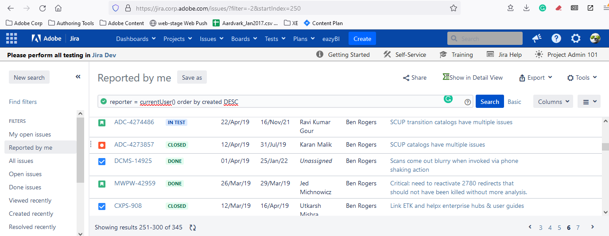

Engineering Work¶
A few examples …
Doc strategy (proposed to engineering)¶
2019: My presentation to management arguing for a GIT/text-based collaborative authoring system which could scale.
Assets: New pipeline/format, new UI, dev guide content, REST API updates, image library, demos, code samples.
Why use text/GIT workflows?¶
A proposal for the Director of Helpx.
Rationale:
Boost productivity up to 500%
Scriptable
Native OS features
Free and open source tools

Markdown at Adobe¶
Bugs¶
As user interface and string experts, writers should file bugs. Writers who truly understand a product can help drive product development by participating in the engineering process. Product expertise is a baseline requirement.
User interface & string work¶
Design live HTML mockups and proposals:
iReader: Mobile and desktop UI mockup 2016 (Check out the live Acrobat mobile app!)
Product features search: Proposal to help users find Acrobat tools (2016)
Super tips: 2017: A better in-product help experience
Continuously provide usability feedback and file enhancement bugs
Edited 2000 UI strings over the course of Acrobat’s last 15 years
Authored most of Acrobat and Reader’s security-related strings from 2009-2018
Internal Specifications¶
FTPDF language and API specification (Liquid Mode in Acrobat)
Security: Yellow Message Bar Specification
Adobe Cross Domain Policy Specification
Registry preference implementation specification for engineering